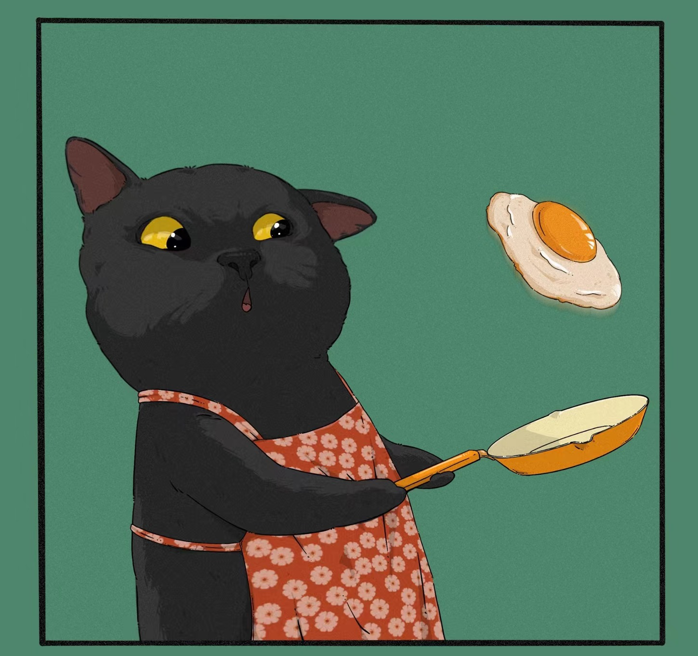
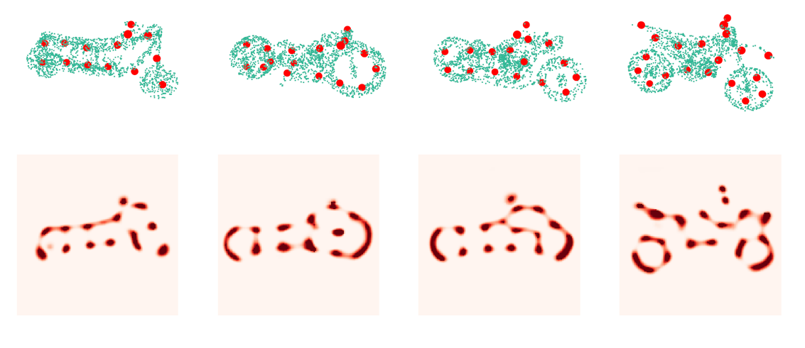
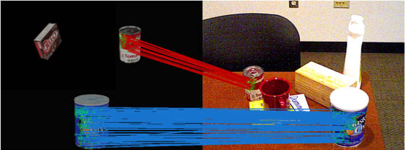
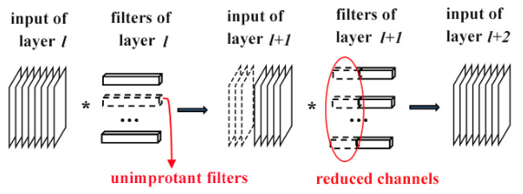
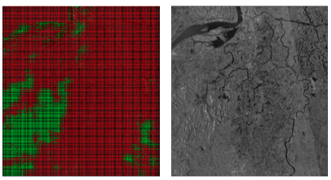
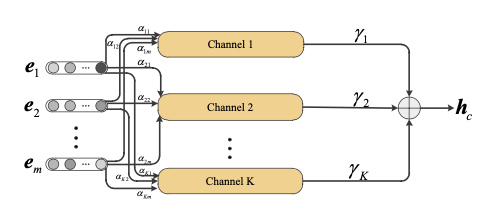
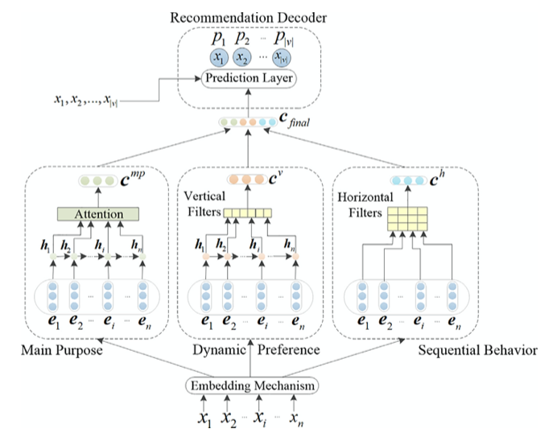

|  | I'm currently a PhD student (2019-) at Tsinghua University advised by Professor Fuchun Sun. My major research fields include robotic vision and manipulation, SAR image processing, recommendation, etc. |
|  |
SNAKE: Shape-aware Neural 3D Keypoint Field
Chengliang Zhong, Peixing You, Xiaoxue Chen, Hao Zhao, Fuchun Sun, Guyue Zhou, Xiaodong Mu, Chuang Gan, Wenbing Huang Arxiv, 2022 [Paper] [Code] |
|  |
Sim2Real Object-Centric Keypoint Detection and Description
Chengliang Zhong, Chao Yang, Jinshan Qi, Fuchun Sun, Huaping Liu, Xiaodong Mu, Wenbing Huang Association for the Advancement of Artificial Intelligence (AAAI), 2022 [Paper] [Project] [Code] [Poster] |
|  |
SAR Target Image Classification Based on Transfer Learning and Model Compression Chengliang Zhong, Xiaodong Mu, Xiangchen He; Jiaxin Wang, Ming Zhu IEEE Geoscience and Remote Sensing Letters (GRSL), 2018 [Paper] |
|  |
Classification for SAR Scene Matching Areas Based on Convolutional Neural Networks Chengliang Zhong, Xiaodong Mu, Xiangchen He, Bichao Zhan, Ben Niu IEEE Geoscience and Remote Sensing Letters (GRSL), 2018 [Paper] |
|  |
Multi-Scale and Multi-Channel Neural Network for Click-Through Rate Prediction Jinjin Zhang, Chenhui Ma, Chengliang Zhong, Peng Zhao, Xiaodong Mu Neurocomputing, 2022 [Paper] |
|  |
Recurrent convolutional neural network for session-based recommendation Jinjin Zhang, Chenhui Ma, Xiaodong Mu, Peng Zhao, Chengliang Zhong, A. Ruhan Neurocomputing, 2021 [Paper] |